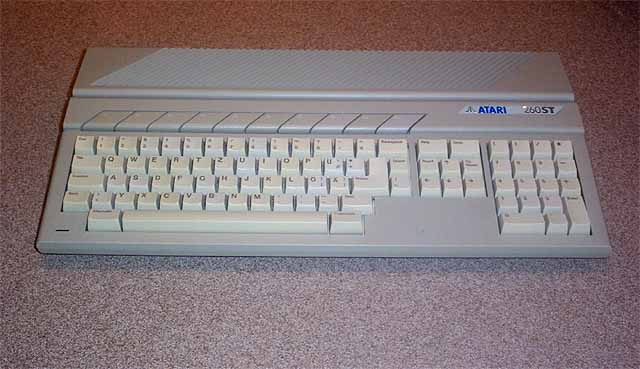

The Atari 260ST
Personal Computer System

The Atari 260ST, a 256K version of the Atari 520ST released in the US
in full production
by the summer of 1985. (User groups, dealers and press received
pre-release versions of
the Atari 520ST's in April of 1985... some also had RF modulators installed.)
The 260ST was designed for the European market, allowing consumers a
lower cost
version that they could afford. Cost of computers
in the UK & Europe were much
higher then in the US and a version of the Atari ST with 256K of memory
to reduce
costs would help Atari penetrate the vast consumer bases oversea's.
Released in 1986 this particular system was short lived as its cost
may have been lower
due to its reduced memory size, so was its usefulness as most useful
software had
no room to run with so little memory.